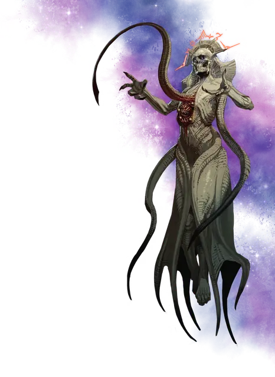

Потусторонний лич
Eldritch Lich
Средняя Нежить, нейтрально-злая

Класс Доспеха 17 (природный доспех)
Хиты 165 (22к8 + 66)
Скорость 30 футов, летая 30 футов (парит)
| мод | спас | ||
|---|---|---|---|
| СИЛ | 11 | +0 | +0 |
| ЛОВ | 18 | +4 | +4 |
| ТЕЛ | 16 | +3 | +3 |
| мод | спас | ||
|---|---|---|---|
| ИНТ | 19 | +4 | +9 |
| МДР | 14 | +2 | +7 |
| ХАР | 12 | +1 | +1 |
Навыки Восприятие +7, Магия +14
Сопротивление урону некротическая энергия, яд
Иммунитет к состояниям испуг, истощение, отравление, очарование, паралич
Чувства истинное зрение 120 футов, пассивное Восприятие 17
Языки Общий, Глубинная речь, Телепатия 120 фт.
Опасность 15 (13000 опыта)
Бонус мастерства +5
Особенности
Паразит из Дальнего предела. Внутри лича обитает червеобразный паразит, хранящий его душу. Когда лич умирает, он объединяется с паразитом и исчезает в Дальнем Пределе. Через 2к4 дня паразит возрождает лича в пределах 1к4 миль от места, где он погиб. Если лич погиб внутри сдерживающего Нежить заклинания магический круг [magic circle], вместо этого он возрождается в виде отиджа [otyugh] с памятью лича.
Легендарное сопротивление (4/день). Если лич проваливает спасбросок, он может вместо этого сделать спасбросок успешным.
Необычная природа. Лич не нуждается в воздухе, питье, еде и сне.
Действия
Мультиатака. Лич совершает одну атаку Паразитическим щупальцем или накладывает заклинание. Лич также дважды использует Психический шёпот.
Паразитическое щупальце. Рукопашная атака оружием: +9 к попаданию, досягаемость 10 фт., одно существо. Попадание: 25 (6к6 + 4) колющего урона плюс 25 (6к6 + 4) урона некротической энергией.
Цель должна преуспеть в спасброске Телосложения Сл 17, иначе станет отравленной. Отравленная цель может повторить спасбросок в конце своего хода, заканчивая на себе эффект в случае успеха. В случае трёх провалов цель умирает и превращается в бормочущего ротовика [gibbering mouther], который подчиняется личу и действует по прошлой инициативе цели.
Психический шёпот. Лич нацеливается на одно существо. которое может видеть в пределах 120 фт. от себя. Цель должна преуспеть в сnасброске Мудрости Сл 17, иначе получит 25 (6к6+4) урона психической энергией и становится ошеломленной до конца следующего хода лича, поскольку завораживающий шепот заполнил её разум.
Использование заклинаний. Базовой характеристикой лича является Интеллект (Сл спасброска от заклинаний 17). Он может накладывать следующие заклинания.
• Неограниченно: обнаружение магии [detect magic], волшебная рука [mage hand], фокусы [prestidigitation];
• 2/день каждое: рассеивание магии [dispel magic], голод Хадара [hunger of Hadar], молния [lightning bolt];
• 1/день каждое: магический глаз [arcane eye], переносящая дверь [dimension door], уход в иной мир [plane shift] (только на себя).
Реакции
Шаг сквозь Дальний Предел. После получения урона лич вместе со всем несомым и носимым снаряжением магическим образом телепортируется на расстояние до 60 футов в свободное пространство, которое он может видеть.
Описание
По ту сторону звёзд можно услышать шёпот Великого Древнего, обещающий знания, бросающие вызов реальности, и силы, способные изменить мир.
Когда волшебник или колдун услышат этот шёпот и внемлют ему, они могут ступить на извилистый путь становления потусторонним личом.
Потусторонний лич, как и другие, подобные ему, — заклинатель, обманувший смерть, разрешив Великому Древнему вживить в себя паразита из Дальнего Предела. Паразит наделяет заклинателя бессмертием, а из его тела вырастают странные щупальца. На теле лича появляется пасть паразита, который защищает носителя от уничтожения, возрождая его спустя несколько дней после смерти.
Хитроумные враги могут саботировать возрождение лича, убив того в магическом круге, тем самым вынуждая его вернуться в искажённой форме, лишённым большинства сил.
Потусторонний лич постоянно слышит странный шёпот из Дальнего Предела, в ответ на который кивает и бормочет. Иногда лич использует свою телепатию, чтобы поделиться этим шёпотом с находящимися рядом разумами.
Воплощение Великого Древнего
Многие сущности носят титул Великого Древнего. Совершите бросок по таблице «Великие Древние», чтобы определить, какая из них одарила лича паразитом.
Великий Древний
| к6 | Облик |
| 1 | Ктулху |
| 2 | Тариздун, Скованный Бог |
| 3 | Дендар, Ночная Змея |
| 4 | Гонадор |
| 5 | Заргон, Возвращающийся |
| 6 | Тот, Что Таится |